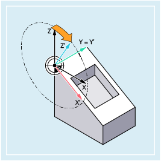
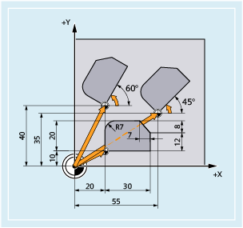
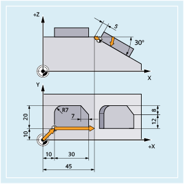
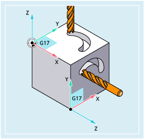

Mit den Befehlen ROT und AROT kann das Werkstückkoordinatensystem im Raum gedreht werden. Die Befehle beziehen sich ausschließlich auf den programmierbaren Frame $P_PFRAME.
| Achtung |
Absolute Frame-Anweisungen löschen alle programmierten FramesSoll ein programmierbarer Frame auf bestehenden Frames aufbauen, ist statt der absoluten die additive Frame-Anweisung zu programmieren. |
Im folgenden Beispiel wird ein Werkstück bearbeitet, auf dessen Oberseite eine identische Form mehrfach vorkommt. Die Programmsätze zur Bearbeitung dieser Form sind in einem Unterprogramm abgelegt. Durch programmierbare absolute Nullpunktverschiebungen (TRANS) werden die jeweils benötigten Werkstücknullpunkte gesetzt. Zusätzlich müssen programmierbare additive Drehungen (AROT) um die zur Arbeitsebene senkrechte Z-Achse durchgeführt werden, da die identischen Formen auf dem Werkstück nicht achsparallel angeordnet sind.
| Programmcode | Kommentar |
|---|---|
| ... | |
| N30 G17 G54 | ; Arbeitsebene X/Y, Werkstücknullpunkt |
| N40 TRANS X20 Y10 | ; Absolute Verschiebung |
| N50 L10 | ; Unterprogramm-Aufruf |
| N60 TRANS X55 Y35 | ; Absolute Verschiebung |
| N70 AROT RPL=45 | ; Additive Drehung um die zur G17-Ebene senkrechte Z-Achse um 45° |
| N80 L10 | ; Unterprogramm-Aufruf |
| N90 TRANS X20 Y40 | ; Absolute Verschiebung (setzt alle bisherigen Verschiebungen zurück) |
| N100 AROT RPL=60 | ; Additive Drehung um die zur G17-Ebene senkrechte Z-Achse um 60° |
| N110 L10 | ; Unterprogramm-Aufruf |
| N120 G0 X100 Y100 | ; Wegfahren |
| N130 M30 | ; Programmende |
In diesem Beispiel werden achsparallele, aber schräg zueinander liegende identische Formen auf dem Werkstück in einer Aufspannung bearbeitet. Die Programmsätze zur Bearbeitung dieser Form sind in einem Unterprogramm abgelegt. Durch programmierbare Nullpunktverschiebungen (TRANS und ATRANS) werden die jeweils benötigten Werkstücknullpunkte gesetzt. Zur Bearbeitung der zweiten Form muss zusätzlich eine programmierbare additive Drehung (AROT) um die Y-Achse durchgeführt werden, um das Werkzeug senkrecht zur schrägen Fläche auszurichten.
| Programmcode | Kommentar |
|---|---|
| ... | |
| N30 G17 G54 | ; Arbeitsebene X/Y, Werkstücknullpunkt |
| N40 TRANS X10 Y10 | ; Absolute Verschiebung |
| N50 L10 | ; Unterprogramm-Aufruf |
| N60 ATRANS X35 | ; Additive Verschiebung |
| N70 AROT Y30 | ; Additive Drehung um die Y-Achse |
| N80 ATRANS X5 | ; Additive Verschiebung |
| N90 L10 | ; Unterprogramm-Aufruf |
| N100 G0 X300 Y100 M30 | ; Wegfahren |
| N110 M30 | ; Programmende |
In diesem Beispiel werden in zwei senkrecht zueinander stehenden Werkstückflächen identische Formen hergestellt. Die Bearbeitungsfolge zur Herstellung dieser Form ist in einem Unterprogramm abgelegt. Durch eine programmierbare absolute Nullpunktverschiebung (TRANS) und zwei programmierbare additive Drehungen (AROT) wird das Werkstückkoordinatensystem so transformiert, dass die zweite Form unter Beibehaltung der für den Unterprogrammablauf notwendigen Bedingungen (Arbeitsebene G17, Koordinatenebene X/Y, Zustellrichtung Z) hergestellt werden kann.
Siehe auch:
Programmierbare Drehung (ROT, AROT, RPL): Weitere Informationen
Programmierbare Frames (Übersicht)